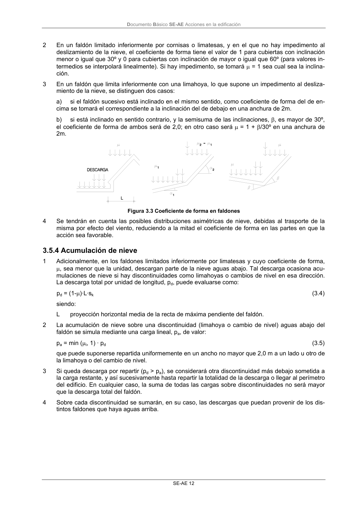

DB-SE-AE · 3.5.4 Acumulación de nieve · versión 2009-04
SHA256: 26116e5088955f0c6963a6187270cad282e1e7bf5a53a90f695c8fa50b4e4487 · página física 16 de 46 · métodos de encabezado
solo si están cotejados.
Formatos: Markdown · JSON de bloques · PDF p. 16 · imagen PNG
Documento Básico SE-AE Acciones en la edificación SE-AE 12 2 En un faldón limitado inferiormente por cornisas o limatesas, y en el que no hay impedimento al deslizamiento de la nieve, el coeficiente de forma tiene el valor de 1 para cubiertas con inclinación menor o igual que 30º y 0 para cubiertas con inclinación de mayor o igual que 60º (para valores in- termedios se interpolará linealmente). Si hay impedimento, se tomará µ = 1 sea cual sea la inclina- ción. 3 En un faldón que limita inferiormente con una limahoya, lo que supone un impedimento al desliza- miento de la nieve, se distinguen dos casos: a) si el faldón sucesivo está inclinado en el mismo sentido, como coeficiente de forma del de en- cima se tomará el correspondiente a la inclinación del de debajo en una anchura de 2m. b) si está inclinado en sentido contrario, y la semisuma de las inclinaciones, β, es mayor de 30º, el coeficiente de forma de ambos será de 2,0; en otro caso será µ = 1 + β/30º en una anchura de 2m. Figura 3.3 Coeficiente de forma en faldones 4 Se tendrán en cuenta las posibles distribuciones asimétricas de nieve, debidas al trasporte de la misma por efecto del viento, reduciendo a la mitad el coeficiente de forma en las partes en que la acción sea favorable. 3.5.4 Acumulación de nieve 1 Adicionalmente, en los faldones limitados inferiormente por limatesas y cuyo coeficiente de forma, µ, sea menor que la unidad, descargan parte de la nieve aguas abajo. Tal descarga ocasiona acu- mulaciones de nieve si hay discontinuidades como limahoyas o cambios de nivel en esa dirección. La descarga total por unidad de longitud, pd, puede evaluarse como: pd = (1-µ)·L·sk (3.4) siendo: L proyección horizontal media de la recta de máxima pendiente del faldón. 2 La acumulación de nieve sobre una discontinuidad (limahoya o cambio de nivel) aguas abajo del faldón se simula mediante una carga lineal, pa, de valor: pa = min (µi, 1) · pd (3.5) que puede suponerse repartida uniformemente en un ancho no mayor que 2,0 m a un lado u otro de la limahoya o del cambio de nivel. 3 Si queda descarga por repartir (pd > pa), se considerará otra discontinuidad más debajo sometida a la carga restante, y así sucesivamente hasta repartir la totalidad de la descarga o llegar al perímetro del edificio. En cualquier caso, la suma de todas las cargas sobre discontinuidades no será mayor que la descarga total del faldón. 4 Sobre cada discontinuidad se sumarán, en su caso, las descargas que puedan provenir de los dis- tintos faldones que haya aguas arriba.
